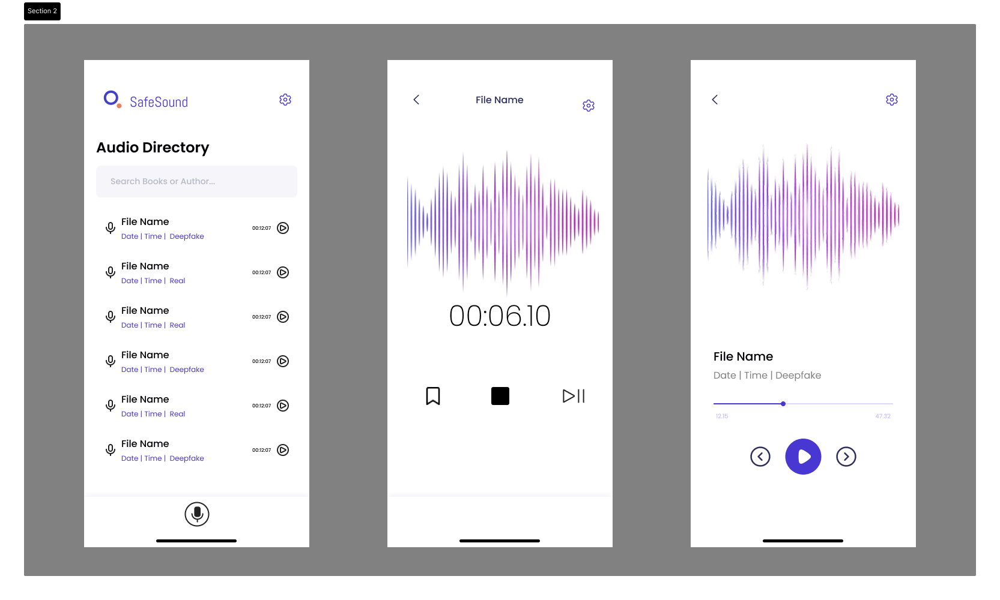
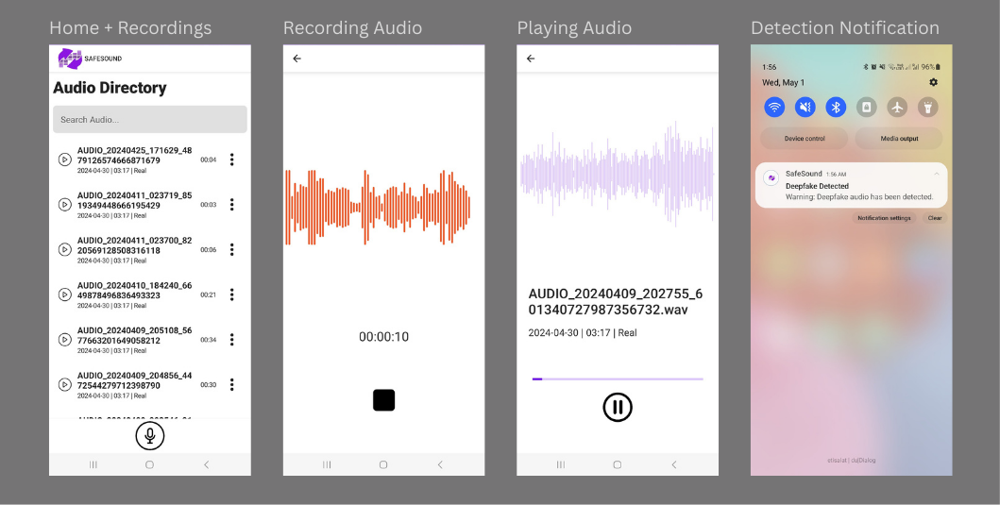

Overview: Mobile application that detects AI-manipulated audio in real-time to help protect users from voice-based fraud.
In recent years, there have been increased cases of individuals answering the phone or engaging with audio, believed to be the voice of a loved one or acquaintance only to discover it is artificially generated. This technology is commonly referred to as audio spoofing and falls within the broader realm of deepfakes: highly convincing Artificial Intelligence (AI) based audio-visual manipulations. Deepfake audio in particular is being increasingly used to manipulate victims into financial scams.
This project’s goal is to make readily accessible a tool for individuals to verify if an audio is real or spoofed, and be notified in the event of the latter, so they can exercise caution. The application then includes an integrated machine learning model to detect any manipulated audio, as well as an interface for users to record the audio and be notified in real time if any is found.
The first phase in this process was to develop a dataset of both spoofed and authentic audio samples, to evaluate a set of selected models. This dataset included a total of 17,312 audio clips: 8656 real and 8656 fake, across the different methods of creating deep fake audio including text-to-speech synthesis (TTS) and voice conversion (VC) methods.
These clips were then pre-processed to reflect the conditions of the typical audio that would be analyzed by the app: phone calls. This process involved resampling the file to indicate compression and then randomly zeroing samples within the audios to indicate packet loss.
Using this dataset, 2 deep learning models with 3 front-end configurations were then evaluated and the best performing one was selected for integration into the app.
I then created high fidelity prototypes in Figma for the different screens of the user interface.
Using these as reference, I then developed in Android Studio with Kotlin the final applicaion, compressing and integrating the model using TensorflowLite, and adding real time user notifications.
